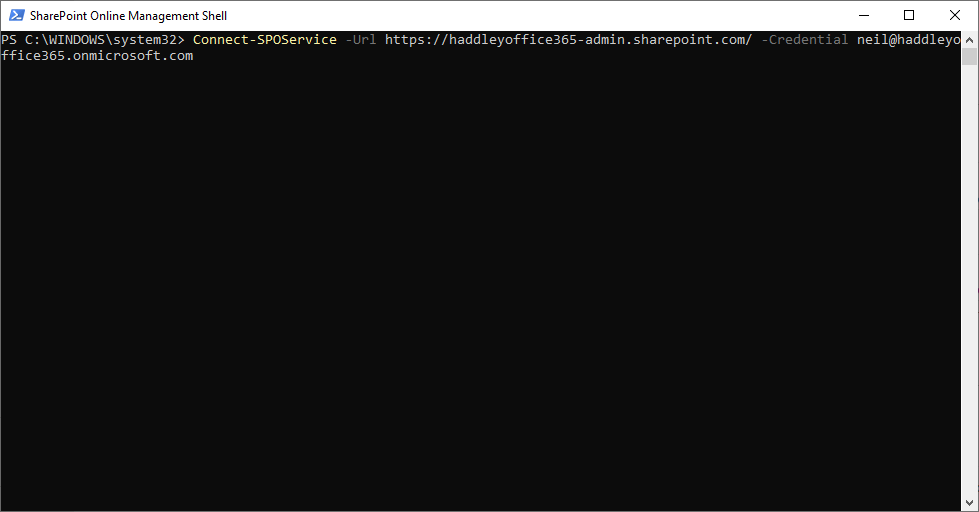
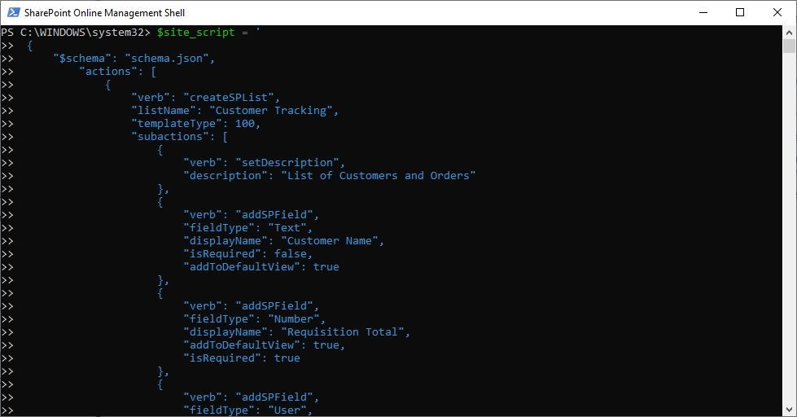
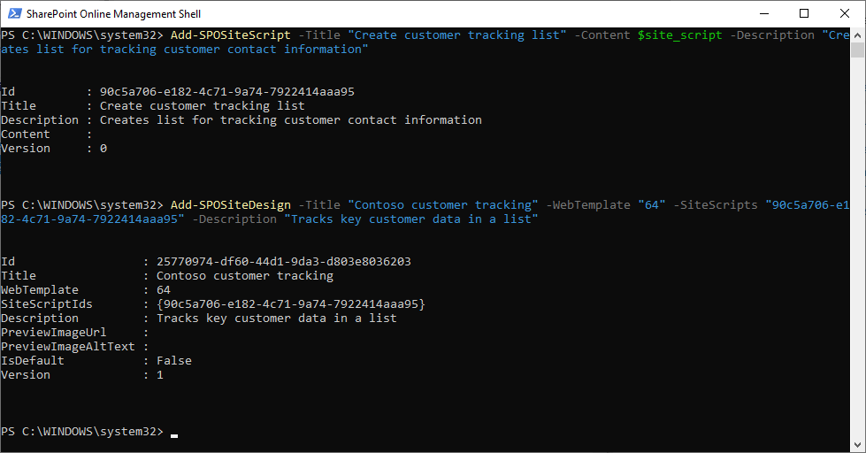
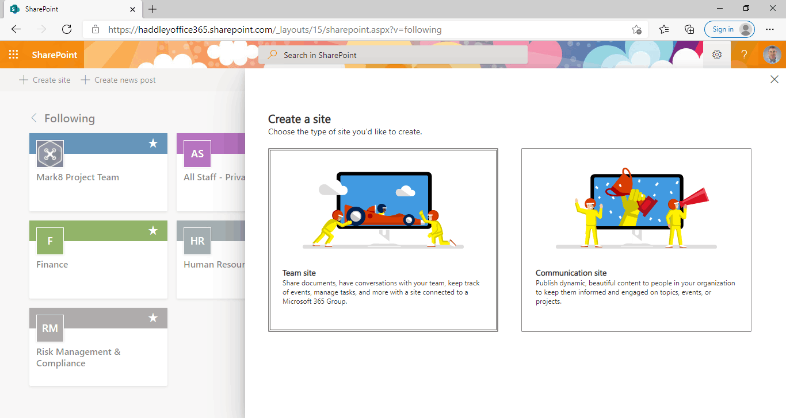
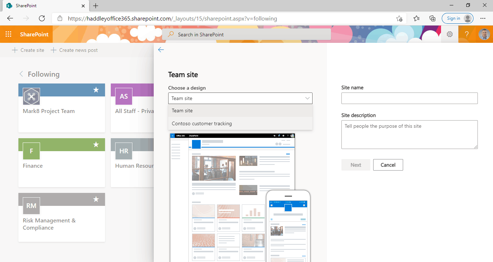
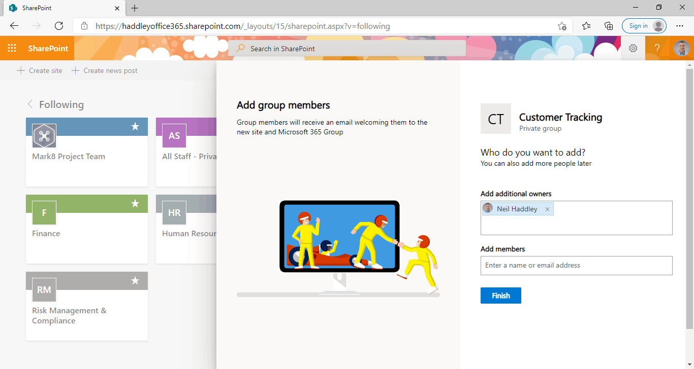
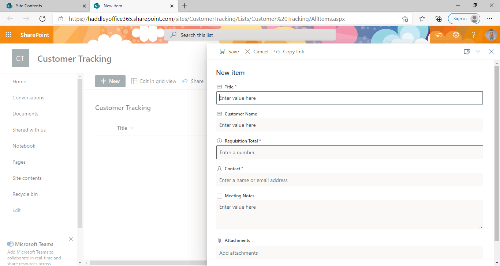
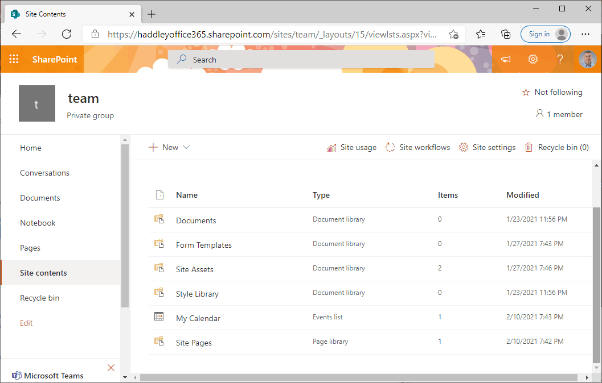
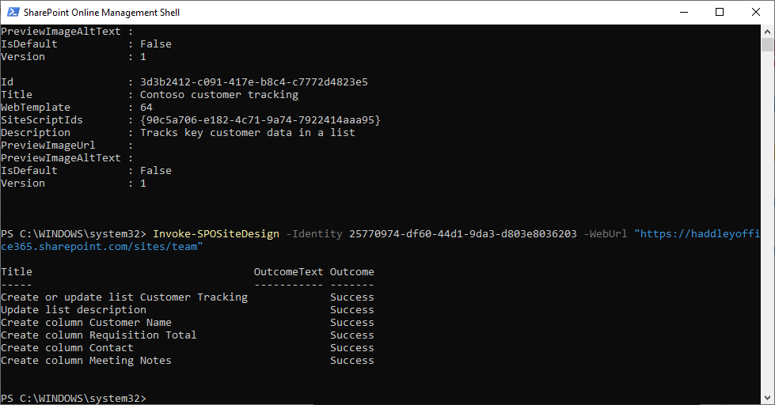
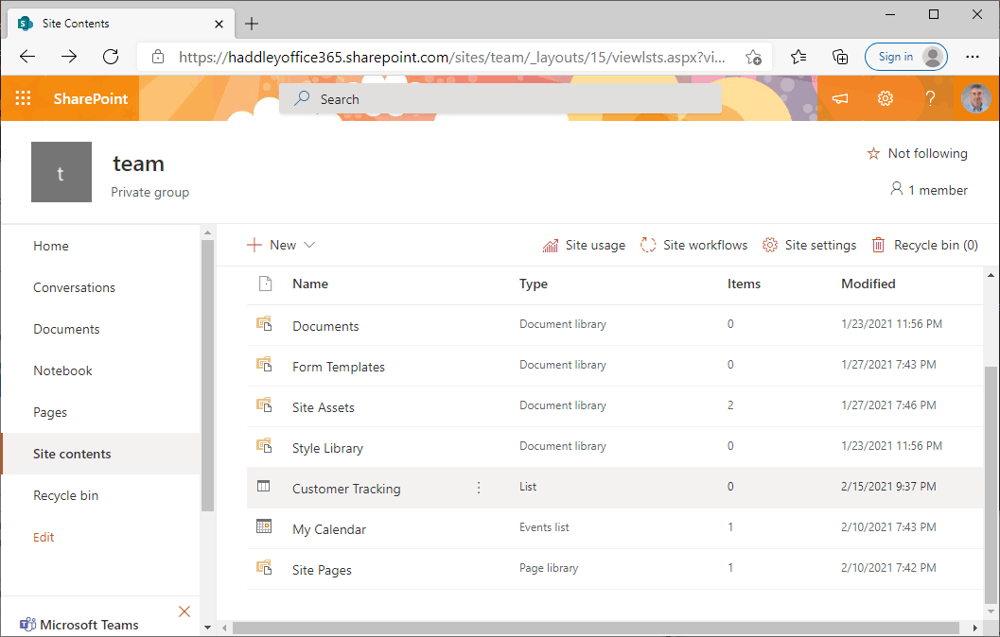

Add a group
There are many ways to create a SharePoint site:
Consider how creating an Office 365 group automatically results in the creation of a SharePoint team site
Add a group

Choose a group type

Set up the basics

Assign owners

Edit settings

Review and finish adding group

New group created

*New* SharePoint site has been provisioned
No matter how the SharePoint site is created additional actions may be needed.
Microsoft have introduced site designs and site scripts but SharePoint users and administrators continue to rely on PnP Provisioning Templates.
PnP Provisioning Templates are xml files that specify updates that can be applied to new or existing SharePoint sites.
PnP Provisioning Templates can be created by hand or generated from a reference site.
The Get-PnPProvisioningTemplate command can be used to generate a PnP Provisioning Template.
The Apply-PnPProvisioningTemplate command can be used to apply a PnP Provisioning Template.
Install-Module -Name PnP.PowerShell
Connect-PnPOnline -Url https://yourtenant.sharepoint.com/sites/yoursite
Get-PnPProvisioningTemplate -Out
Apply-PnPProvisioningTemplate -Path
Example site script
Site scripts are added to a SharePoint tenant using the Add-SPOSiteScript command

Connect to the SharePoint administration site

Load the JSON text into a variable
Site designs can extend the SharePoint modern team site template(64) or the SharePoint modern communication site template (68).
Site designs are added to a SharePoint tenant using the ADD-SPOSiteDesign command (specifying one or more Site Script ids)

Add the Site Script and add the Site Design
Once the Site design has been created the out of the box "Create a Site" user experience will be updated

Select "Team Site" because the new Site Design is based on the team site template(64)

The "Contoso customer tracking" Site Design is available in the "Choose a design" drop down list.

Click the Finish button to create the new Site and to run the Site Scripts

The newly created site includes the "Customer Tracking" list
The Get-SPOSiteDesign command can be used to list the installed Site designs (and the ids assigned).
Site designs can be applied to an existing SharePoint site using the Invoke-SPOSiteDesign command.

Site contents before invoking site design

Invoke-SPOSiteDesign

Site contents after invoking site design